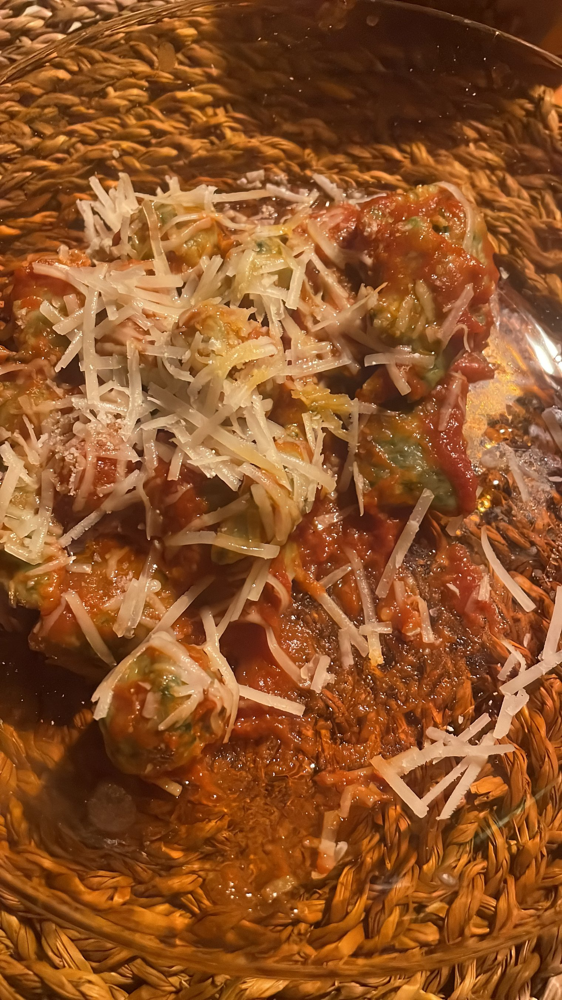

Gnocchi di spinaci e ricotta
Ingredienti
3×
- 250 g di spinaci
- 250 g di ricotta
- 1 uovo
- 60 g di parmigiano
- 100 -150g di farina
- sugo di pomodoro
- basilico

Preparazione
Passo 1
Lessare 250 g di spinaci, strizzarli bene e tritarli.
Passo 2
Mischiare con 250 g di ricotta, 1 uovo, 60 g di parmigiano e 100 -150g di farina (circa, quanto basta per un impasto morbido). Salare.
Passo 3
Fare dei cilindri e tagliare gli gnocchi.
Passo 4
Cuocere in acqua bollente salata finché vengono a galla. Servire con sugo di pomodoro, basilico e parmigiano.
Riepilogo
250 g di spinaci
Lessare tritarli
250 g di ricotta
1 uovo
60 g di parmigiano
100 -150g di farina
Mischiare
tagliare
sugo di pomodoro
basilico
Cuocere